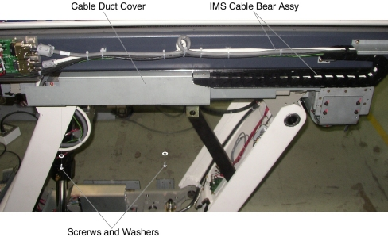
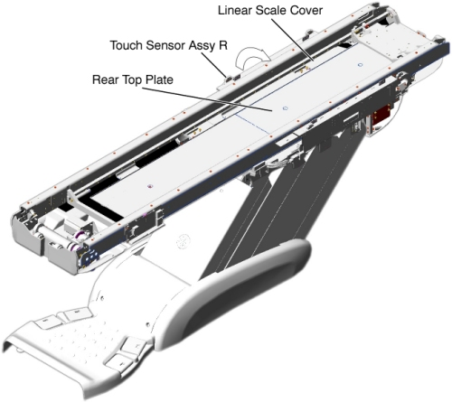
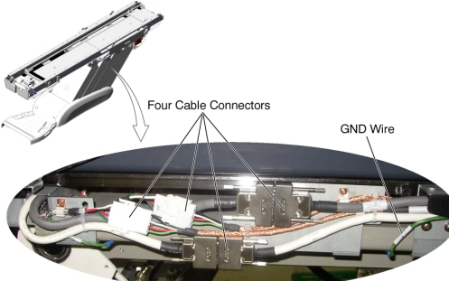
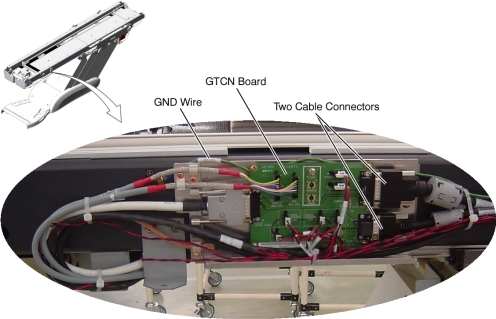
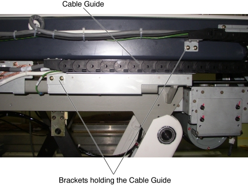
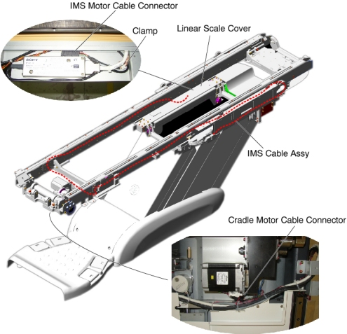
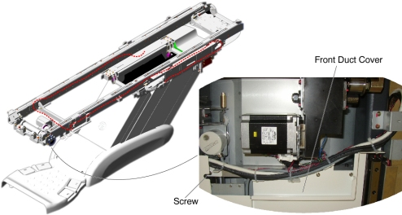
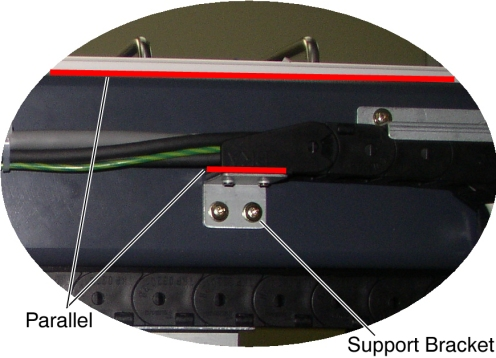
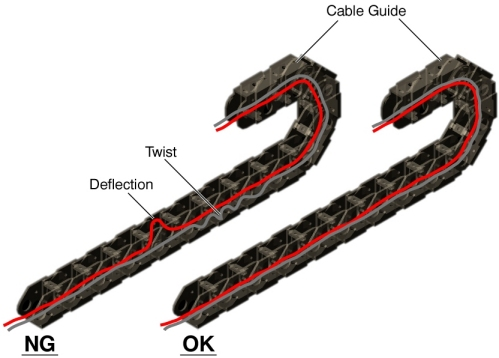
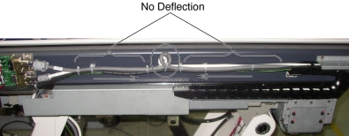

Operating Documentation
Direction 5307452-8EN, Rev# 4
Discovery CT750 HD Service Methods - Adv
Operating Documentation |
| Required Persons | Preliminary Reqs | Procedure | Finalization |
|---|---|---|---|
| 1 |
| Last Revised: | 26 June 2008 |
| Item | Qty | Effectivity | Part# | Manufacturer | |
|---|---|---|---|---|---|
| IMS Cable Bear Assembly | 1 | - | 5127780-xx | - | |
Raise the Table to maximum height.
Move the Cradle and IMS to OUT limit position.
Remove power from Table by turning off 120VAC, Axial Drive and HVDC switches on Service Switch Panel.
Remove the following Table Covers:
Top Cover (Right/Left)
Front Top Cover
Rail Cover (Right/Left)
Rear Top Plate
IMS Rear Cover
IMS Side Cover (Right/Left)
Liner Scale Cover
Illustration 1: Table Covers

Remove two screws holding the cable duct cover, and remove the cable duct cover from the Table.
Illustration 2: Cable Duct Cover Removal

Remove the Touch Sensor Assy R (it is necessary to disconnect the cable connector), and put it on the Table frame.
Illustration 3: Preparation for IMS Cable Bear Assy Replacement

Disconnect four cable connectors and a GND wire on the cable duct, and remove any clamps.
Illustration 4: Cable Connection of Cable Duct

Disconnect two cable connectors and a GND wire from the GTCN board, and remove any clamps.
Illustration 5: Cable Connection of GTCN

Remove two support brackets (holding the IMS cable guide to the IMS frame) by unscrewing 2 (x2) screws.
Illustration 6: Support Bracket Removal

Cut any tie-wraps holding the IMS cable to the Table frame, and remove any clamps, then disconnect the following cable connectors:
Cradle Motor Cable Connector
IMS Motor Cable Connector
Illustration 7: IMS Cable Assy Routing

Move the IMS so that the cable outlet is behind the rail support.
| NOTE: | Cable Outlet Cable Outlet There is not enough space between the rail support and the IMS frame for the cable connector to pass through. By moving the cable outlet of the IMS to behind the rail support, the cable connector can be removed through this space. |
Illustration 8: Cable Outlet of IMS Frame

Remove a screw holding the front duct cover to the under Table frame and remove the IMS cable bear assembly from the Table.
Illustration 9: Front Duct Cover

Verify that the top surface of the support bracket is parallel with the top surface of the Table frame.
Illustration 10: Support Bracket Configuration

Verify that the cable connector of the IMS motor does not interfere with IMS/Cradle movement.
Verify that the cables in the cable guide have no deflection and are not twisted.
Illustration 11: Cable Configuration in the cable guide

Verify that the cables on the Table frame have no deflection.
Illustration 12: Cable Configuration on the Table Frame

Re-install the touch sensor assy R, all removed Table trays and covers.
Power up the Table from the Service Switch Panel.
Verify that the IMS moves IN and OUT normally.